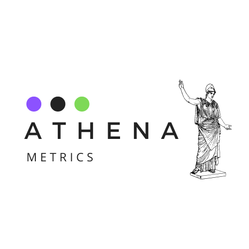

When equality becomes a competitive advantage
Benefits for companies bridging the Gender Gap, Apr 26, 2021

According to the MIT article “Closing the Gender Gap is Good for Business” (Cohen, Carol & Ready, Douglas A. 2019)
there is increased research showing that incorporating more women in leadership positions is bound to companies future success.
Gender parity has the potential to become a competitive advantage for organizations, as it would help them stay relevant and
avoid public criticism (as publicity over gender issues arise) and lack of customer reliability.
Also, Schooley, Skyle (2019) in an article for businessdaily.com mentions that according to an Atlassian survey
about diversity and inclusion, 80% of those who participated believe that working in an inclusive,
diverse environment is important in order for the workplace to be successful,
as studies show diversity and inclusion improve employee engagement and retention, increases market share
and improves financial returns.
According to numerous studies advancing women equality and opportunities for advancement in leadership positions
can boost the global GDP, a finding that was also divulged by the McKinsey Global Institute
and the International Labour Organization .
 Source: International Labour Organization
Patty McCord, chief talent officer at Netflix, declared to MIT:
“We did all kinds of studies at Netflix on achieving extraordinary performance,
and one thing we all learned was that diverse teams perform better and produce better outcomes for customers.
Yet now, I speak to leaders from companies around the world and they often tell me that their gender deficit
at the leadership level is due to a pipeline problem — that they just can’t find [women leaders].
My response is: Really? Have you actually paid attention to the women working alongside you and
sitting right in front of you?” (Cohen, Carol & Ready, Douglas A. 2019) .
Source: International Labour Organization
Patty McCord, chief talent officer at Netflix, declared to MIT:
“We did all kinds of studies at Netflix on achieving extraordinary performance,
and one thing we all learned was that diverse teams perform better and produce better outcomes for customers.
Yet now, I speak to leaders from companies around the world and they often tell me that their gender deficit
at the leadership level is due to a pipeline problem — that they just can’t find [women leaders].
My response is: Really? Have you actually paid attention to the women working alongside you and
sitting right in front of you?” (Cohen, Carol & Ready, Douglas A. 2019) .
 Hafner-Cai, Junwei (2020) mentions in an interview for Robeco, a company that invests in emerging markets since 1930,
that companies that invest in gender parity “have access to larger talent pool, can retain top performers more effectively
and benefit from a better customer understanding as well as better insights into market opportunities”
The company TSG found that by working towards gender equality in their own company,
they saw returns of 50%, this represents more than double the amount of the industry average (50% of their employees are women).
Women make 80% of the purchasing decisions in the household, and according to Esserman in an interview
for The New York Times, founder of TSG, it was important to start bringing female voices to the table
and to leadership positions within the company. (Picker, Leslie 2015)
Hafner-Cai, Junwei (2020) mentions in an interview for Robeco, a company that invests in emerging markets since 1930,
that companies that invest in gender parity “have access to larger talent pool, can retain top performers more effectively
and benefit from a better customer understanding as well as better insights into market opportunities”
The company TSG found that by working towards gender equality in their own company,
they saw returns of 50%, this represents more than double the amount of the industry average (50% of their employees are women).
Women make 80% of the purchasing decisions in the household, and according to Esserman in an interview
for The New York Times, founder of TSG, it was important to start bringing female voices to the table
and to leadership positions within the company. (Picker, Leslie 2015)
Is the Gender Gap Real?
We bring you some facts in pictures from the World Economic Forum, Global Gender Report 2021, Apr 27, 2021


About Athena Metrics
Links To Resources
World Economic Forum -Global Gender Gap Report 2021Forbes - Why Gender Equality Matters In Business Success
Mc Kinsey - Women in the Workplace 2020
Glassdoor - How to Analyze Your Gender Pay Gap: An Employer's Guide- PDF
World Economic Forum - "Technology can be a great ally in the drive for greater inclusion and diversity"